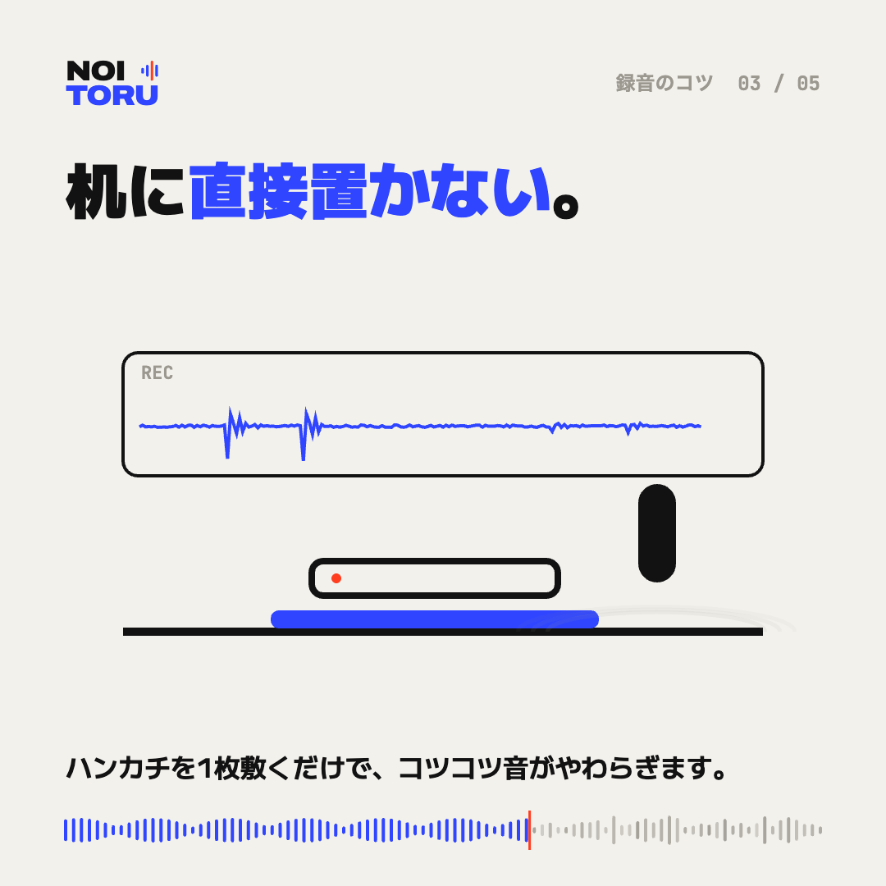

録音機は、机に直接置かない

机の振動は、そのまま録音に入る
録音機を机に直接置くと、ペンを置く音、指で机をたたく音、カップを置く音が、机を伝わって大きく入ります。話している本人は気づきにくいのに、録音で聞くと耳ざわりな音です。
ハンカチやタオルを一枚敷く
録音機の下にハンカチやタオルを一枚敷くだけで、机から伝わる音がやわらぎます。
置いたら、触らない
録音中にスマホを手に取ったり、位置を直したりすると、「ガサッ」という大きな音が入ります。置いたら録り終わるまで触らないようにしましょう。通知の音が入らないよう、おやすみモードにしておくのもおすすめです。
短く大きな音は、あとから目立たなくできることも
コツコツという短い音は、あとから目立たなくできることがあります。ただ、声と重なっていると取りきれないので、録るときに防ぐのがいちばんです。